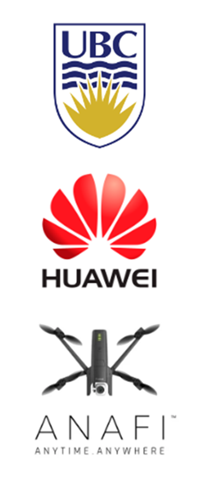

System Context
The project explored a drone that could capture vlogging footage, respond to gestures, and adapt to its environment with AI-powered sensing and control.
A drone platform designed to capture footage while responding to gestures, navigating its environment, and moving data through WLAN communication paths for real-time control and feedback.

The project explored a drone that could capture vlogging footage, respond to gestures, and adapt to its environment with AI-powered sensing and control.
I focused on the communications and integration side of the platform, connecting real-time data flow with command-and-control needs so the drone could behave like an interactive system rather than a passive camera.
The project became a working demonstration of how drone communication, sensing, and AI behavior can be packaged into a more responsive creator tool.